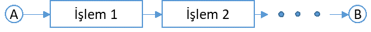
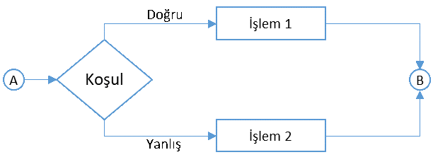
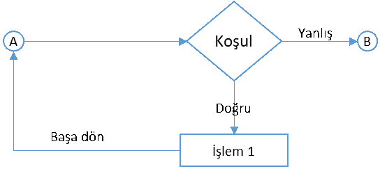
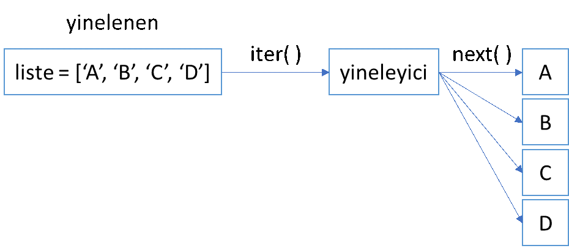

5. Koşullu İfadeler ve Döngüler#
5.1. Koşullu İfadeler#
Bir bilgisayar verilen bir komutu aşağıdaki yöntemlerden birine göre yerine getirir [Mal11]:
Belirli bir sıraya göre.
Alternatifler arasında seçim yaparak
Aynı işlemi belirli bir şart sağlanana kadar tekrar tekrar gerçekleştirerek
Aşağıdaki şekilde bu üç yönteme ilişkin iş akışları verilmiştir.
Sıralı işlem yürütme:

Bu şekilde bilgisayar programı A noktasından başlar ve verilmiş olan komutları sırasıyla yerine getirir. Son işlemi yerine getirdikten sonra B noktasında programı sonlandırır.
Koşullu işlem yürütme:

Buradaki iş akışında ise bir koşul ifadesi sınanır. İstenen koşul sağlanıyorsa “İşlem 1”, sağlanmıyorsa “İşlem 2” yerine getirilir ve B noktasında program sonlandırılır. Koşullu ifadeler üç farklı türde olabilir.
İstenen koşul sağlanıyorsa “İşlem 1”i yerine getir. Sağlanmıyorsa hiçbir şey yapmadan çık. Örneğin elimizde bir sınıftaki öğrencilerin not listesi olsun. Sınav notu 85’in üzerinde olan öğrenciler geçti olarak belirtmek isteyelim ve sadece geçen öğrencilerle ilgilenelim.
öğrenci notu > 85 ise:
öğrenci geçti
İstenen koşul sağlanıyorsa “İşlem1”i yerine getir. Sağlanmıyorsa “İşlem 2”yi yap. Yukarıdaki örneği düşünelim ancak bu defa notu 85’in üzerinde olanları geçti, olmayanları kaldı olarak işaretlemek isteyelim.
öğrenci notu > 85 ise:
öğrenci geçti
aksi halde:
öğrenci kaldı
İstenen 1. koşul sağlanıyorsa “İşlem 1”i yerine getir. Sağlanmıyorsa koşul 2’yi sına.
Koşul 2 sağlanıyorsa “İşlem 2”yi yerine getir. Sağlanmıyorsa koşul 3’ü sına.
Koşul 3 sağlanıyorsa “İşlem 3”ü yerine getir. Sağlanmıyorsa koşul 4’ü sına.
Sonuncu türdeki sınama istenen sayıda koşulu test etmeye izin verir. Örneğin, yine sınav notları ile işlem yapmak istiyor olalım ancak 100 üzerinden alınan notları harf notuna çeviren bir program yazıyor olalım. Programın algoritması şu şekilde olacaktır.
öğrenci notu > 85 ise:
not A
aksi halde öğrenci notu > 70 ise:
not B
aksi halde öğrenci notu > 60 ise:
not C
aksi halde öğrenci notu > 50 ise:
not D
aksi halde:
not E
Tekrarlayan (döngüsel) işlem yürütme:

Buradaki akış ise döngü olarak isimlendirilir. Bu iş akışında program istenen bir şart sağlanana (ya da sağlanmayana) kadar verilen işlemi yapmaya devam eder. Döngülere izleyen bölümde ayrıntılı olarak yer vereceğiz.
Bir defada birden fazla koşulun hepsinin, birinin ya da bazılarının sağlanıp sağlanmadığı da test edilmek istenebilir. Bu da VE ile VEYA kullanılarak yapılır. Örneğin, bir sayı dizisindeki 50’den büyük çift sayıları bulmak istiyorsak (x çift VE x > 50) şartını yazabiliriz. Her defasında eldeki sayının verilen iki şartı da yerine getirip getirmediği test edilir. Diğer bir örnek olarak da sayı dizisindeki tek veya üçe bölünebilen sayıları bulmak istiyor olalım. Bunun için de (x tek VEYA x üçün katı) koşulunu yazarız. Koşulun doğrulanması için eldeki sayının iki şarttan birini yerine getirmesi yeterli olacaktır.
Koşullu ifadelerde doğruluğu sınanan koşullar sonucu doğru ya da yanlış (True, False) olan mantıksal ifadelerdir. Mantıksal sınamalara örnek olarak iki sayının eşit olması ya da bir sayının diğerinden küçük, büyük, küçük eşit ya da büyük eşit olmasını verebiliriz. Python’da kullanılan mantıksal sınamalara ilişkin operatörler aşağıdaki gibidir.
Operatör |
Anlamı |
|---|---|
== |
Eşit mi? |
!= |
Farklı mı? |
< |
Küçük mü? |
<= |
Küçük ya da eşit mi? |
> |
Büyük mü? |
>= |
Büyük ya da eşit mi? |
Python’da mantıksal sınama operatörlerini kullanımına ilişkin aşağıdaki örnekleri inceleyin. Kendiniz de farklı koşullar yazıp sonucuna bakabilirsiniz.
5 == 5 # 5, 5’e eşit mi?
True
6 == 5 # 6, 5’e eşit mi?
False
6 != 5 # 6, 5’ten farklı mı?
True
4 < 7 # 4, 7’den küçük mü?
True
2.78 <= 3.14 # 2.78, 3.14’ten küçük ya da ona eşit mi?
True
Birden fazla mantıksal sınamayı bir arada test etmek için “ve” (AND) ile “veya” (OR) operatörlerini kullanmamız gerektiğini belirtmiştik. Python’da “ve” için “&”, “veya” içinse ( | ) operatörleri kullanılır. Bu operatörlerin sonucu aşağıdaki gibidir.
x |
y |
x & y |
x | y |
|---|---|---|---|
True |
True |
True |
True |
True |
False |
False |
True |
False |
True |
False |
True |
False |
False |
False |
False |
True & False
False
True & True
True
(6 > 4) & (5 < 10) # 6, 4’ten büyük VE 5, 10’dan küçük mü?
True
(5 == 4) | (3 != 4) # 5, 4’e eşit veya 3, 4’ten farklı mı?
True
x = 45
(x>50) | (x%3==0) # 50’den büyük veya üçe tam bölünebilir mi?
True
Artık, Python’da koşullu ifadelerin yazılışına geçebiliriz. Tüm yüksek seviye programlama dillerinde olduğu gibi Python’da da koşullu ifadeler “if…else” ifadeleri ile yazılır. Python’da if…else ifadesinin yazım şekli aşağıdaki gibidir:
if koşul:
gerçekleştirilecek işlem
Öncelikle ifade if ile başlamalıdır. Sonrasında test edilmek istenen koşul yazılı ve satır sonunda : konulur. Bir alt satırda daha önce aktardığımız üzere içeriden başlanmalıdır. Birçok Python editörü bunu zaten otomatik olarak yapar.
if 5 > 4:
print("Koşul sağlanıyor!")
Koşul sağlanıyor!
if 7 == 8:
print("Koşul sağlanıyor!")
puan = 90
if puan > 85:
print("Öğrenci geçti!")
Öğrenci geçti!
İlk örnekte sınanan şart doğru olduğu için alt program alt satırdaki işlemi gerçekleştiriyor. İkinci örnekte ise 7, 8’e eşit olmadığı yani sınanan şart doğru olmadığı için program bir alt satırı atlayarak hiçbir şey yapmıyor. Son örnekte puan değeri 85’ten büyük olduğu için istenilen işlem gerçekleştiriliyor.
Python’da 0 ve None dışında tüm değişkenlerin bool karşılığının True olduğunu belirtmiştik. Bu nedenle if satırına mantıksal sınama yerine sayısal bir değer ya da metin de girilebilir. Ancak bu tür kullanımla çok sık karşılaşılmaz.
if 100:
print("Bir değer girildi!")
Bir değer girildi!
if 0:
print("Bir değer girildi!")
if "metin":
print("Bir değer girildi!")
Bir değer girildi!
İlk ve son örnekte, “if”ten sonraki değerin bool karşılığı True olduğundan alt satırdaki işlem gerçekleştirilir. İkinci örnekte ise 0’ın bool değeri False olduğu için alt satırdaki işlem atlanır.
Şimdi de if...else kullanımına ilişkin bir örnek görelim.
puan = 70
if puan > 85:
print("Öğrenci geçti!")
else:
print("Öğrenci kaldı!")
Öğrenci kaldı!
İlk satırda istenen şart sağlanmadığı için buradaki işlem atlanıyor. Else ifadesi, istenen koşulun sağlanmaması halinde yapılması istenen işlemi veriyor. Öğrencinin notu 85’in altında olduğu için istenen koşul sağlanamıyor ve else ile belirtilen işlem gerçekleştiriliyor.
Şimdi de üçüncü tip if…else ifadelerine geçelim. Yukarıdaki iki örnekte sadece bir koşula bakılıyor ve bu koşulun doğruluğuna göre işlem yapılıyor. Sınanmak istenen koşul sayısı iki veya daha fazla da olabilir.
puan = 65
if puan > 85:
karne_notu = "A"
else:
if puan > 70:
karne_notu = "B"
else:
if puan > 60:
karne_notu = "C"
else:
if puan > 50:
karne_notu = "D"
else:
karne_notu = "F"
print(karne_notu)
C
Yukarıdaki kodu incelediğimizde iç içe geçmiş if…else ifadeleri olduğunu görüyoruz. Önce puan’ın 85’ten yüksek olup olmadığını sınayan bir if…else ifadesi var. Bu sınama yanlışsa puanın 70’ten büyük olup olmadığını kontrol eden ikinci bir if…else ifadesi geliyor ve bu şekilde devam ediyor. Her if…else ifadesinin bir önceki “else:” satırına göre daha içeriden başladığına dikkat edin.
Yukarıda görülen yazım şekli yanlış olmamakla birlikte çok fazla koşulun test edildiği bir kodda içeri doğru girintileri çok artıracak ve kod yazma ve okumayı zorlaştıracaktır. Bu nedenle Python’da else: if ifadesi yerine elif anahtar kelimesi geliştirilmiştir. Şimdi yukarıdaki kodu elif anahtar kelimesini kullanarak nasıl yazdığımızı inceleyelim. Görüldüğü gibi kod bu şekilde daha derli toplu ve okunabilir hale geliyor.
puan = 65
if puan > 85:
karne_notu = "A"
elif puan > 70:
karne_notu = "B"
elif puan > 60:
karne_notu = "C"
elif puan > 50:
karne_notu = "D"
else:
karne_notu = "F"
print(karne_notu)
C
5.2. Döngüler#
Önceki bölümde döngülerden kısaca bahsetmiştik. Döngüler, belirli bir şart sağlanana ya da sağlanmayana kadar tekrar edilen işlemlerdir. Python’da kullanılan iki tür döngü vardır: “while” ve “for” döngüleri.
5.2.1. While Döngüsü#
While döngüsünün yapısı aşağıdaki gibidir.
while koşul:
gerçekleştirilecek işlem
Örneğin 1’den 9’a kadar sayıları yazdıran bir program yazalım.
x = 1
while x < 10:
print(x)
x = x + 1
1
2
3
4
5
6
7
8
9
Önce x değişkenini 1’e eşitliyoruz. Daha sonra x’in değeri 10’dan küçük olduğu sürece x’in yazdırılması komutunu veriyoruz.
Döngü yazarken dikkat edilmesi gereken en önemli nokta, işlemin her gerçekleşmesinden sonra sınanacak verinin güncellendiğinden emin olmaktır. Bu nokta ihmal edilirse sınanan koşul her zaman doğru olacağı için program sonsuz döngüye girecektir. Yukarıdaki örnekte, x = x + 1 satırını yazmamış olsaydık x’in değeri hep 1’de kalacağı için (x < 10) şartı her zaman geçerli olacak ve program sonsuza (ya da durdurulana) kadar ekrana x’in değerini yani 1’i yazacaktı. Terminal ekranında sonsuz döngüye girerseniz Ctrl + C kısayolu ile döngüden çıkabilirsiniz.
Yukarıdaki kodda görülen x = x + 1 ifadesi daha kısa bir şekilde x += 1 olarak da yazılabilir. Bu ifade x = x + 1 ile aynı anlama gelir. Python’da kullanılan bu tür ifadelere aşağıda yer verilmiştir.
Operatör |
Kullanımı |
Açıklama |
|---|---|---|
+= |
x += c |
x = x + c |
-= |
x -= c |
x = x - c |
*= |
x *= c |
x = x * c |
/= |
x /= c |
x = x / c |
**= |
x **= c |
x = x ** c |
%= |
x %= c |
x = x % c |
Döngü sırasında herhangi bir koşulun sağlanması durumunda döngünün durdurulmasını isteyebiliriz. Bu durumda “break” anahtar kelimesini kullanmamız gerekir. Aşağıdaki örnekte, while döngüsü, koşul1 sağlandığı sürece devam eder. Ancak, koşul1’in sağlandığı sırada, koşul2 de doğru olursa while döngüsü sona erecektir.
>>> while koşul1:
… if koşul2:
… break
… işlem1
Aşağıdaki örnekte, kullanıcıdan bir sayı girmesi isteniyor. Ancak girilen sayının sıfır olması durumunda while döngüsü sonlandırılıyor.
while True:
cevap = input("Bir sayi girin (Cikmak için 0 girin): ")
print ("Girdiğiniz sayi: " + cevap)
if int (cevap) == 0:
break
5.2.2. For Döngüsü#
Bir işlemi belirli bir sayıda ya da bir dizi boyunca yapmak için for döngüsü kullanılır. Örneğin, bir listedeki bütün elemanları karesini alacak bir program yazmak isteyelim. Bunun için izlenecek yol aşağıdaki gibidir.
x, 1 ile listenin eleman sayısı arasında olmak üzere:
listenin x. elemanının karesini al
Bu işlemde x, 1’den başlar. Listenin 1. elemanının karesi alınır. Sonra, x’in değeri 1 artırılır. Listenin 2. elemanının karesi alınır. İşlem, x’in listenin eleman sayısına eşit olmasından sonra biter.
For döngülerinin mantığı bu şekildedir. For döngüsünde bir değişken, bir de değişkenin sırayla izlediği bir dizi vardır. Değişken dizinin ilk elemanından son elemanına kadar bütün elemanları birer birer alır ve bu elemanlara istenilen işlemleri uygular.
for değişken in dizi:
işlem
Görüldüğü gibi, Python’da birçok konuda olduğu gibi döngüleri kullanmak da son derece basittir. Daha düşük seviyedeki programlama dillerinde for döngüsü aşağıdaki şekilde tanımlanır.
for(int i = 1; i < 10; i = i + 1){
döngü içeriği
}
Yukarıdaki döngünün ilk satırına baktığımızda üç şartın sağlanmış olması gerektiğini görüyoruz. Önce döngü çalışırken her defasında artırılacak değişken tanımlanmalıdır (int i = 1). Daha sonra döngünün geçerli olduğu aralık verilmelidir (i < 10). Son olarak da döngünün her çalışmasından sonra ilgili değişkenin güncellenmesi gerekmektedir (i = i +1). Python’da ise bu kadar ayrıntıya gerek kalmadan çok basit bir şekilde döngü yazılabilmektedir. Döngü değişkeninin (i) veri tipini ve her döngüden sonra değişkenin nasıl güncelleneceğini belirtmeye gerek yoktur.
Aşağıdaki örnekte 1’den 5’e kadar olan sayıların karelerini yazdırıyoruz. Bunun için kullanılan range() fonksiyonu, ilk sayı ile ikinci sayı arasında, ikinci sayının dahil olmadığı bir sayı dizisi oluşturur. range(1, 5), 1,2,3,4 tamsayı dizisini üretir. Fonksiyonda tek sayı kullanırsak sıfırdan bu sayının bir eksiğine kadar olan sayılar üretilir.
for i in range(1, 6):
print (i**2)
1
4
9
16
25
Aşağıdaki örnekte, listede yazan öğrenci isimlerini for döngüsü ile yazdırıyoruz.
liste = ["İlhan", "Ali", "Mehmet", "Yağız", "Baran", "Özlem"]
for ogrenci in liste:
print (ogrenci)
İlhan
Ali
Mehmet
Yağız
Baran
Özlem
Bir liste üzerinde for döngüsü uygularken liste elemanlarının yanı sıra bunların sıralarına da erişmek isteyebiliriz. Python for döngüleri buna da izin vermektedir. Bunun için enumerate() fonksiyonu kullanılabilir. Bir dizi, liste ya da sözlük gibi sıralı veri yapılarına uygulanabilen enumerate() fonksiyonu uygulandığı dizideki sıra numarası ve bu sıradaki elemanı birlikte verir. Örneğin enumerate fonksiyonunu bir liste üzerinde uygularsak, sonuç (0, liste[0]), (1, liste[1]), (2, liste[2]),… olacaktır.
Şimdi yukarıdaki listeye enumerate fonksiyonunu ve for döngüsünü birlikte uygulayalım.
liste = ["İlhan", "Ali", "Mehmet", "Yağız", "Baran", "Özlem"]
for sira, ogrenci in enumerate(liste):
print(str(sira) + " : " + str(ogrenci))
0 : İlhan
1 : Ali
2 : Mehmet
3 : Yağız
4 : Baran
5 : Özlem
Sıra numarasının sıfır yerine birden başlaması için döngüde str(sira) yerine str(sira + 1) yazmak yeterli olacaktır.
enumerate() fonksiyonunun bir başka kullanım alanı da tuple veri nesneleridir. Bu fonksiyon yardımı ile listelerde olduğu gibi tuple veri nesnelerinde indeks numaralarına ve bu numaralara denk gelen verilere erişmek mümkündür.
ulkeler = ['Türkiye', 'İtalya', 'İspanya', 'Portekiz', 'Fransa']
baskentler = ['Ankara', 'Roma', 'Madrid', 'Lizbon', 'Paris']
ulke_baskent = zip(ulkeler, baskentler)
for sira, veri in enumerate(ulke_baskent):
ulke, baskent = veri
print(sira, ulke, baskent)
0 Türkiye Ankara
1 İtalya Roma
2 İspanya Madrid
3 Portekiz Lizbon
4 Fransa Paris
Bazı listelerin yine listelerden meydana gelebildiğini daha önce görmüştük. Örneğin, aşağıdaki örnekte, listeler bölümünde de kullandığımız notlar listesi görülmektedir. Bu listenin her bir elemanı yine bir listedir ve öğrenci adı ile aldığı notu içermektedir.
notlar = [['Eren',100],
['Ilhan',99],
['Ali',98],
['Erman',97],
['Mehmet',96]]
for i in notlar:
print(str(i[0]) + ": " + str(i[1]))
Eren: 100
Ilhan: 99
Ali: 98
Erman: 97
Mehmet: 96
Döngüdeki i notlar listesini elemanlarını göstermektedir. Bu durumda her alt listedeki ismi i[0], notu da i[1] ile gösterebiliriz. Bu örnekte, alt listelerin eleman sayısını biliyorduk. Peki, alt listelerin her biri farklı sayıda elemandan oluşuyorsa bu durumda ne yapabiliriz?
siniflar = [["İlhan", "Ali"],
["Yağız", "Baran", "Tuğçe", "Mehmet"],
["Selin", "Umut", "Lara", "Ayten", "Murat"]]
for sinif, i in enumerate(siniflar):
print("Sınıf" + ":" + str(sinif+1))
for sira, ogrenci in enumerate(i):
print(" " + str(str(sira+1) + " : " + str(ogrenci)))
Sınıf:1
1 : İlhan
2 : Ali
Sınıf:2
1 : Yağız
2 : Baran
3 : Tuğçe
4 : Mehmet
Sınıf:3
1 : Selin
2 : Umut
3 : Lara
4 : Ayten
5 : Murat
Şimdi de öğrenci ismi ve notlardan oluşan bir sözlük (dict) veri yapısından anahtar ve değerleri yazdıralım.
not_listesi = {'İlhan': 75, 'Ali': 98,
'Mehmet': 83, 'Yağız': 99,
'Baran': 68, 'Özlem': 89,
'Ayten': 74}
for ogrenci in not_listesi:
print (ogrenci, not_listesi[ogrenci])
İlhan 75
Ali 98
Mehmet 83
Yağız 99
Baran 68
Özlem 89
Ayten 74
Sözlük veri yapısında for döngüsü uygulamanın bir başka yolu da döngüyü dict.items() üzerinde uygulamaktır. Aşağıdaki kod da yukarıdaki örnekle aynı sonucu verecektir.
for anahtar, deger in not_listesi.items(): print(anahtar + " : " + str(deger))
Yukarıdaki döngüyü not_listesi sözlük yapısı üzerinde uygulamaya kalkarsanız bir hata mesajı ile karşılaşırsınız. Ancak bunun yerine not_listesi.items() üzerinde uyguladığınızda anahtar (key) ve değere (value) ayrı ayrı erişebilirsiniz.
Şimdi önceki bölümde gördüğümüz liste, tuple ve sözlük veri yapılarını kullanarak biraz daha ileri seviye bir örnek üzerinden ilerleyelim. Çoğu zaman bir veri yapısı oluşturduğumuzda, içerdiği veri sayısını biliriz. Ancak zaman zaman programın başında oluşturduğumuz liste veya sözlükteki değerlerin sayısına ilişkin bir bilgimiz bulunmayabilir. Örneğin, farklı dokümanlardaki kelimeleri ve her kelimenin sayısını okuyacak bir metin analizi programı üzerinde çalışıyorsanız oluşturacağınız liste ya da sözlüğün uzunluğu hakkında en başta fikir yürütmeniz mümkün değildir.
Bu durumda nasıl bir kod yazacağımız göstermek için aşağıdaki örneği inceleyelim. Elimizde, bir listede her bir öğrencinin sınıfı, adı ve numarası tuple verisi olarak yer alıyor. Fazla yer kapsamaması için listeyi kısa tuttum. Bizden istenen bu listedeki verileri alıp her sınıftaki öğrencileri ayrıştırmamız. Bunun için anahtarların sınıf, değerlerin ise öğrenci listesi olduğu biz sözlük oluşturabiliriz. Ancak işimiz burada da bitmiyor. Öğrenci listesinin elemanları da öğrenci adı ve numarasından oluşan tuple verileri olacak.
# Öğrenci listesi
ogrenciler = [('A', 'Ali', '0001'),
('A', 'Can', '0002'),
('A', 'Eren', '0003'),
('B', 'Ayşe', '0004'),
('B', 'İlhan', '0005'),
('B', 'Baran', '0006'),
('C', 'Mehmet', '0007'),
('C', 'Yağız', '0008'),
('C', 'Özlem', '0009')]
# Boş bir sınıflar sözlüğü oluşuralım.
siniflar = {}
# Öğrenciler listesini izleyecek bir for döngüsü yazalım.
# Listenin elemanı olan tuple verilerini de sinif, ogrenci ve numara olarak ayrıştıralım.
for sinif, ogrenci, numara in ogrenciler:
# Sınıflar sözlüğünde bu sınıfa ait bir anahar yoksa yenisini oluştur.
# Bu nahtara karşılık gelen değer boş bir liste olsun.
if sinif not in siniflar:
siniflar[sinif] = []
# öğrenci ve numara verilerini tuple haline getir ve ilgili sınıfın listesine ekle
siniflar[sinif].append((ogrenci, numara))
# Sınıfları yazdır
print(siniflar)
{'A': [('Ali', '0001'), ('Can', '0002'), ('Eren', '0003')], 'B': [('Ayşe', '0004'), ('İlhan', '0005'), ('Baran', '0006')], 'C': [('Mehmet', '0007'), ('Yağız', '0008'), ('Özlem', '0009')]}
Bu örneği gerçekleştirmenin farklı bir yolu da Python standart kütüphanesinde yer alan collections modülündeki defaultdict yapısını kullanmaktır. defaultdict yapısı ile yazdığımız kod biraz daha kısalacaktır.
# collections modülünden defaultdict yapısını aktaralım
from collections import defaultdict
# Yine bir siniflar sözlüğü oluşturuyoruz ama bu defa defaultdict yapısında olduğunu ve değerlerin liste olduğunu belirtiyoruz.
siniflar = defaultdict(list)
# anahtarın yani sınıfın sözlükte olup olmadığını kontrol etmemize gerek olmadan öğrenci, numara ikilisini ilgili anahtarı kullanarak sözlüğe ekleyebiliyoruz.
for sinif, ogrenci, numara in ogrenciler:
siniflar[sinif].append((ogrenci, numara))
print(siniflar)
defaultdict(<class 'list'>, {'A': [('Ali', '0001'), ('Can', '0002'), ('Eren', '0003')], 'B': [('Ayşe', '0004'), ('İlhan', '0005'), ('Baran', '0006')], 'C': [('Mehmet', '0007'), ('Yağız', '0008'), ('Özlem', '0009')]})
Tüm programlama dillerinde olduğu gibi Python’da da for döngüleri oldukça önemlidir. Ancak, bu noktada bir uyarı yapmamız gerekiyor. Özellikle daha önce farklı programlama dillerini kullanmış olanlar, yazdıkları programlarda for döngüsü kullanmaya daha fazla yatkın olabilir. Ancak, yazdığınız bir programda for (veya while) döngüsü kullanmak başvuracağınız en son yöntem olmalıdır. Öncesinde, Python’da for döngüsü yerine kullanabileeğiniz bir metod ya da fonksiyon olup olmadığını araştırmanız önerilir.
Python, vektörel bir programlama dilidir . Bunun anlamını aşağıdaki örneklerle ifade edelim.
[3,4,5,6,7] + [10,9,8,7,6] = [3+10, 4+9, 5+8, 6+7, 7+6]
[3,4,5,6,7] + 2 = [3+3, 4+3, 5+3, 6+3, 7+3]
Gördüğünüz gibi Python’da dizilere uygulanan işlemler o dizinin elemanlarına tek tek uygulanır. İlk örnekte, 5 elemanlı iki listeyi topladığımızda, her iki listenin aynı sıradaki elemanları toplanır. İkinci örnekte ise bir liste ile skaler değeri topluyoruz. Burada da Python, skaler değeri listedeki her elemanla tek tek topluyor. Çok basit gibi görünen bu örnek bize yazdığımız programlarda çok fazla zaman kazandırabilir.
import numpy as np
import time
x = np.random.rand(1000000)
y = np.random.rand(1000000)
z = 0
tic = time.time()
for i in range(1000000):
z += x[i] * y[i]
toc = time.time()
print('For döngüsü: ' + str(1000*(toc-tic)) + ' ms')
For döngüsü: 210.4179859161377 ms
tic = time.time()
z = np.dot(x,y)
toc = time.time()
print('Vektörel çözüm: ' + str(1000*(toc-tic)) + ' ms')
Vektörel çözüm: 0.0 ms
Yukarıdaki örnekte 1 milyon sayıdan oluşan iki dizinin vektör çarpımlarını önce for döngüsü kullanarak sonra da Python numpy modülündeki np.dot() metodunu kullanarak hesaplıyoruz. İlk yöntemde işlem 583 ms sürerken ikincisinde sadece1 ms sürdü. Numpy modülünü ve ilerleyen bölümlerde göreceğiz bu nedenle kodun bı kısmını anlamadıysanız endişe etmeyin. Burada, önemli olan Python’a özgü metodların döngülere göre ne kadar hızlı olabileceğini görmektir.
5.3. Yineleyiciler (Iterators)#
Python’da döngülerden, özellikle de for döngülerinden bahsetmişken açıklamamız gereken bir başka konu Python’da yer alan yineleyici yapısıdır. Şimdiye kadar metin, sözlük, liste, tuple gibi sıralı elemanlardan oluşan çok farklı dizilerle karşılaştık. Çalışmalarımızda kullanacağımız özellikle for döngülerinin çoğu böyle bir diziyi alıp bunun elemanlarına aynı işlemi uygulamaktan ibaret olacaktır. Önceki bölümde yer alan örneklere tekrar bakarsanız, yazdığımız for döngülerinin bir listenin ya da farklı bir dizinin elemanlarını sırayla ve tek tek alıp bunlara yazdırma ya da karelerini alma gibi işlemler uyguladığımızı görürsünüz. Örnekleri daha da artırabiliriz, bir listedeki bütün isimleri büyük harfle yazdırmak, bir dosyada yer alan belirli şartı sağlayan kayıtları seçmek, bir dizide yer alan sayıların toplamını bulmak gibi. Bu dizilerin özellikleri her elemanın bir sıra numarasına sahip olmalarıdır.
Sıralı elemanlardan oluşan ve elemanlarına yukarıda tanımladığımız şekilde sırayla ve birer birer işlem uygulanabilen diziler yinelenen (iterable) yapılar olarak isimlendirilir. Bir liste, sözlük ya da tuple gibi yinelenen nesne üzerinde for döngüsü uyguladığımızda bu nesne üzerinde yinelenen bir işlem gerçekleştirmiş oluyoruz. Bu nesneler üzerinde yinelenebilen işlemler yapabilmemizin nedeni bunların yinelenen nesne özelliğine sahip olmalarıdır. Liste, sözlük veya tuple gibi üzerinde işlem yapılan, örneğin satırları tek tek okunan bir dosya da yinelenen nesnedir.
Yinelenen bir dizideki bir elemanı belirten ve istediğimiz işlemleri sırayla gerçekleştirmemize izin veren nesneler ise yineleyici (iterator) olarak isimlendirilir. Python’da, bir yinelenen veri yapısını işaret eden yineleyici oluşturmak için iter() fonksiyonu kullanılır. Aslında, yinelenen nesneleri üzerlerinde iter() metodu uygulanabilen nesneler olarak da görebiliriz. Aslında, önceki bölümde gördüğümüz for döngüsünün yaptığı da tam olarak budur. Yinelenen bir nesneyi alır, buna ilişkin bir yineleyici oluşturur ve bu yineleyici yardımı ile yinelenen üzerinde istenen işlemi gerçekleştirir. Yineleyici de benzer biçimde üzerinde next() metodu uygulanabilen nesne olarak tanımlanabilir. Buraya kadar çok fazla terim gördük. Bu kadar terim arasında kafamızın karışmış olması normaldir. Şimdi buraya kadar anlattıklarımızı aşağıdaki şekilde özetleyelim.

Şekilde de görüldüğü gibi yinelenen bir nesne üzerinde iter() metodu ile yineleyici oluşturuluyor. Bu yineleyici de next() metodunu kullanarak yinelenen nesnedeki elemanlara sırayla ulaşıyor.
Aşağıdaki örnekte yinelenen olarak bir kelimelik bir metin nesnesi oluşturalım ve bunun üzerinde iter() ve next() metodlarını deneyelim.
sehir = "İzmir"
yine = iter(sehir)
next(yine)
'İ'
next(yine)
'z'
next(yine)
'm'
next(yine)
'i'
next(yine)
'r'
next(yine)
StopIteration:
Oluşturduğumuz metin üzerinde iter() fonksiyonunu kullanarak bir yineleyici oluşturuyoruz. Yineleyicinin ismini de yine yaptık. Sonraki adımda, oluşturduğumuz yineleyici üzerinde her next() fonksiyonunu kullandığımızda metin nesnesi üzerindeki bir sonraki elemana ulaşıyoruz. Bizim örneğimizde elemanlar harfler ancak bu bir dosyanın satırları, bir listenin elemanları, bir sözlüğün değerleri gibi çok farklı türde veri yapıları olabilir. Örnekteki son adımda, next() metodu ile r harfine ulaştıktan sonra artık ulaşılabilecek bir eleman kalmıyor. Bu nedenle fonksiyonu tekrar kullandığımızda StopIteration hata mesajını alıyoruz.
Bir yinelenen nesnedeki tüm elemanlara aynı anda ulaşmak için yineleyicinin önüne * işareti getirerek kullanabiliriz. Yukarıdaki örneğimizde tüm harfleri aynı anda yazdırmayı deneyelim.
sehir = "İzmir"
yine = iter(sehir)
print(*yine)
İ z m i r
Ancak son işlemden sonra print(*yine) komutunu tekrar uygularsak herhangi bir sonuç alamayız. Çünkü artık yineleyici, yinelenin sonuna gelmiş oluyor.
Bazen, bir yinelenen nesne yerine belirli sayıda işlemi arka arkaya yapmak gerekebilir. Örneğin, aynı cümleyi 5 defa yazdırmak isteyebilirim. Bu durumda iş yarayabilecek bir fonksiyon range() nesnesidir. Kabaca, range(x), 0’dan x-1’e kadar tamsayılardan oluşan bir liste oluşturuyor gibi düşünebiliriz. Esasında, range() fonksiyonu gerçekten bir sayı listesi oluşturmaz. Sadece sayı listesini işaret eden bir yineleyicisi olan bir nesne oluşturur. Bu fonksiyonu iki argümanlı olarak da yazdırmak mümkündür. range(x,y) yazdığımızda, x ile başlayan ve y-1 ile son bulan ardışık tamsayılara işaret eden bir yineleyici üretilir.
for i in range(5):
print(i)
0
1
2
3
4
for i in range(4, 8):
print(i)
4
5
6
7
Oluşturulan bir range nesnesinin içeriğini yazdırmak isterseniz yazdırılan sonuç çok da bilgi verici olmayacaktır.
sayilar = range(10,20)
print(sayilar)
range(10, 20)
Range nesnesinin işaret ettiği sayıları görebilmek için bunları list() veya set() gibi bir fonksiyonla dizi haline getirmek gerekir.
sayilar = range(10,20)
sayi_listesi = list(sayilar)
print(sayi_listesi)
[10, 11, 12, 13, 14, 15, 16, 17, 18, 19]
Aslında, list(), sum(), set() gibi birçok fonksiyon argüman olarak yineleyicileri kullanır.
For döngülerini anlatırken enumerate() fonksiyonundan bahsetmiştik. Şimdi bu bölümde öğrendiklerimizle birlikte enumerate() fonksiyonuna tekrar bakalım. Bu fonksiyon, herhangi bir yinelenen nesneyi argüman olarak alır ve özel bir enumerate nesnesi üretir. Bu nesnenin kendisi de bir yinelenen nesnedir.
liste = ['A', 'B', 'C', 'D']
enum= enumerate(liste)
print(type(enum))
<class 'enumerate'>
Bu nesne kullandığımız listedeki (veya bir başka yinelenen nesnedeki) elemanları, bunların indeks numaraları ile birlikte tutar. Bunu görebilmek için yine list() fonksiyonunu kullanalım.
list(enum)
[(0, 'A'), (1, 'B'), (2, 'C'), (3, 'D')]
Bu yapı sayesinde, for döngülerinde belirttiğimiz gibi bir yinelenen nesnedeki elemanlara bunların sıra numaraları ile birlikte erişmek (örneğin bunları yazdırmak) mümkündür.
liste = ['A', 'B', 'C', 'D']
for indeks, deger in enumerate(liste):
print(indeks, deger)
0 A
1 B
2 C
3 D
Enumerate, fonksiyonuna start argümanı girilerek yinelenen nesnenin istenen sıra numarasından başlanılması sağlanabilir.
for indeks, deger in enumerate(liste, start = 2):
print(indeks, deger)
2 A
3 B
4 C
5 D
Yineleyiciler konusunda çok bilinen bir başka fonksiyon da zip() fonksiyonudur. Zip fonksiyonu, bir veya daha fazla sayıda yinelenen nesneyi argüman olarak alır ve tuple nesnelerinden oluşan bir dizi üretir. Bir zip nesnesinde, n. sıradaki tuple, aldığı bütün argümanların n. sıradaki nesnelerinden oluşan bir tuple nesnesidir. Tanım biraz karışık gelmiş olabilir. Aşağıdaki örneğe bakalım.
ulkeler = ['Türkiye', 'Japonya', 'İtalya']
baskentler = ['Ankara', 'Tokyo', 'Roma']
ulke_baskent = zip(ulkeler, baskentler)
print(*ulke_baskent)
('Türkiye', 'Ankara') ('Japonya', 'Tokyo') ('İtalya', 'Roma')
ya da
for ulke, baskent in zip(ulkeler, baskentler):
print(ulke, baskent)
Türkiye Ankara
Japonya Tokyo
İtalya Roma
Yinelenen nesneler ile ilgili olarak bir noktayı hatırlatmakta fayda görüyorum. Enumerate ya da zip gibi bir yineleme fonksiyonunu bir defa kullandığımızda oluşturulan yineleyici, yinelenen nesnenin sonuna geliyor. Bu nedenle aynı fonksiyonu tekrar çağırdığımızda herhangi bir sonuç alamayız. Örneğin, yukarıdaki örnekte yer alan for döngüsünü bird aha çağırırsak herhangi sonuç belirmeyecektir. Bu nedenle bir daha kullanabilmek için yineleyiciyi tekrar oluşturmak gerekmektedir.
zip() fonksiyonu ile oluşturulmuş bir nesneyi tekrar kendisini oluşturan bileşenlere ayırmak için * operatörünü kullanabiliriz. Aşağıdaki örnekte, oluşturulmuş olan ulke_baskent nesnesini tekrar bileşenlerine ayırmak için bu nesneyi zip() fonksiyonu içinde önüne * getirerek yazıyoruz.
ulkeler = ['Türkiye', 'Japonya', 'Amerika', 'İspanya', 'İtalya']
baskentler = ['Ankara', 'Tokyo', 'New York', 'Madrid', 'Roma']
ulke_baskent = zip(ulkeler, baskentler)
ulke, baskent = zip(*ulke_baskent)
print(ulke)
('Türkiye', 'Japonya', 'Amerika', 'İspanya', 'İtalya')
print(baskent)
('Ankara', 'Tokyo', 'New York', 'Madrid', 'Roma')
5.4. Liste Döngüleri#
Liste döngüleri, İngilizce’de List Comprehension olarak kullanılıyor. Bu terimin Türkçe’deki tam karşılığını bulamadım. Türkçe kaynaklarda farklı kullanımlar bulunmakta. “Liste Döngüsü” terimin birebir çevirisi olmamakla birlikte kullanım açısından uygun olduğunu düşünüyorum.
Önceki bölümlerde for döngüleri ile liste oluşturmanın yöntemlerini gördük. Örneğin 1’den 10’a kadar olan sayıların karelerinden meydana gelen bir liste oluşturalım. Bunun için bir for döngüsü kullanabiliriz.
kareler = []
for i in range(1,11):
kareler.append(i**2)
print(kareler)
[1, 4, 9, 16, 25, 36, 49, 64, 81, 100]
Veya diyelim ki bir listede yer alan elemanlarla belirli bir işlem örneğin 2 ile çarpma işlemini yapıp bunlardan yeni bir liste oluşturmak istiyoruz.
liste1 = [3, 4, 5, 7, 10, 12]
liste2 = []
for i in liste1:
liste2.append(i*2)
print(liste2)
[6, 8, 10, 14, 20, 24]
Listelerde işlem yaparken döngüler yerine kullanabileceğimiz bir başka yöntem liste döngüleridir. Liste döngülerini kullanarak yukarıdaki for döngülerinin yaptığını tek satırda gerçekleştirebiliriz.
Döngüler, çoğu zaman oldukça etkili programlama teknikleri olmakla birlikte özellikle büyük verilerle çalışırken döngülerin yavaş ve verimsiz olduğunu görürsünüz. Büyük verilerde döngü kullanmak işlem hızını oldukça yavaşlatabilmektedir. Bunun için mümkün oldukça döngüler yerine vektörlerle çalışmayı tercih etmeniz önerilir. Bu konuya ileride ayrıntılı olarak değineceğiz.
Şimdi yukarıda gördüğümüz 1’den 10’a kadar sayıların karelerinden oluşan listeyi tek satırda oluşturalım.
kareler = [i**2 for i in range(1,11)]
print(kareler)
[1, 4, 9, 16, 25, 36, 49, 64, 81, 100]
kareler = [i**2 for i in range(1,11)]
print(kareler)
[1, 4, 9, 16, 25, 36, 49, 64, 81, 100]
Bir liste döngüsü basitçe, iki köşeli parantez arasındaki bir for döngüsü olarak isimlendirilebilir. Liste döngüsünün genel yapısı şu şekildedir:
[çıktı ifadesi for yineleyici değişken in yinelenen nesne]
Şimdi de ikinci örneği liste döngüsü yöntemi ile tekrarlayalım.
liste1 = [3, 4, 5, 7, 10, 12]
liste2 = [i*2 for i in liste1]
print(liste2)
[6, 8, 10, 14, 20, 24]
Aşağıdaki örnekte listede ay isimleri yer alıyor. Fazla yer kaplamaması için ayları ilk üç harfleri ile göstermek istiyoruz. Bunu bir liste döngüsü ile kolayca yapabiliriz.
aylar = ['Ocak', 'Şubat', 'Mart', 'Nisan', 'Mayıs', 'Haziran',
'Temmuz', 'Ağustos', 'Eylül', 'Ekim', 'Kasım', 'Aralık']
aylar_kisa = [ay[0:3] for ay in aylar]
print(aylar_kisa)
['Oca', 'Şub', 'Mar', 'Nis', 'May', 'Haz', 'Tem', 'Ağu', 'Eyl', 'Eki', 'Kas', 'Ara']
Liste döngülerine koşul ekleyerek istenen şartları taşıyan elemanların seçilebilmesi de olanaklıdır. Bu durumda köşeli parantez içindeki ifade aşağıdaki şekli alır.
[çıktı ifadesi for yineleyici değişken in yinelenen nesne if koşul]
Varsayalım ki yukarıdaki örnekte sadece M harfi ile başlayan ayların ilk üç harflerini seçtirmek istiyoruz.
aylar = ['Ocak', 'Şubat', 'Mart', 'Nisan', 'Mayıs', 'Haziran',
'Temmuz', 'Ağustos', 'Eylül', 'Ekim', 'Kasım', 'Aralık']
aylar_kisa = [ay[0:3] for ay in aylar if ay[0] == "M"]
print(aylar_kisa)
['Mar', 'May']
Örnekte yer alan if ay[0] == "M" ifadesi, for döngüsünü uygularken aynı zamanda ilk harfi “M” olanları seçmektedir.
Şimdi de 1’den 10’a kadar olan tek sayıların küpünü aynı yapıyı kullanarak hesaplayalım.
kup_tek = [i**3 for i in range(0,11) if i % 2 == 1]
print(kup_tek)
[1, 27, 125, 343, 729]
Liste döngüsüne koşullu ifade olarak if ekleyebiliyorsak else de ekleyebilmeliyiz. Bunu da aşağıdaki gibi gerçekleştirebiliriz. Aynı örneklerden devam edelim. Bu defa 1’den 10’a kadar olan sayılardan tek olanların küpünü, çift olanların ise karesini alalım. If ifadesinin yanına else de geldiğinde sıralamada küçük bir değişiklik olduğuna dikkat edin.
sartli_dongu = [i**3 if i % 2 == 1 else i**2 for i in range(0,11)]
print(sartli_dongu)
[0, 1, 4, 27, 16, 125, 36, 343, 64, 729, 100]
Burada sıralama aşağıdaki gibi oldu:
Koşul Doğru ise İşlem | Koşul | Koşul Doğru Değilse İşlem | For Döngüsü
5.5. Sözlük Döngüleri#
Liste döngüleri ile aynı yapıyı kullanarak sözlük döngüleri yardımı ile sözlükler oluşturmak da mümkündür. Sözlük döngülerinde köşeli parantez yerine küme parantezi kullanıyoruz ve anahtar, değer ikilisini iki nokta (:) ile ayırıyoruz.
Aşağıdaki örnekte, listede yer alan kelimelerin anahtar, bunların harf sayısının değer oluğu bir sözlük oluşturuyoruz.
sehirler = ['İstanbul', 'Ankara', 'İzmir', 'Eskişehir', 'Bursa']
sehir_sozluk = {sehir : len(sehir) for sehir in sehirler}
print(sehir_sozluk)
{'İstanbul': 8, 'Ankara': 6, 'İzmir': 5, 'Eskişehir': 9, 'Bursa': 5}
5.6. Alıştırmalar#
Aşağıdaki listeyi kullanarak önce bu listenin elemanlarını yazdıran bir for döngüsü oluşturun.
prg_dilleri = ['Python', 'R', 'Matlab', 'C++', 'C', 'Java', 'JavaScript']
Şimdi de sırayla aşağıdaki işlemleri yapın:
Listeyi işaret eden bir yineleyici oluşturun.
Bu yineleyiciyi kullanarak listedeki programlama dillerini yazdırın.
İpucu: Hangi iki fonksiyonu kullanmanız gerektiğini düşünün?
Aşağıdaki matrisi oluşturacak bir liste döngüsü yazın. İpucu: İç içe iki liste döngüsü kullanmalısınız. Yazacağınız kod,
[[…………..] ………..]formatında olmalı.
[[0, 1, 2, 3, 4],
[0, 1, 2, 3, 4],
[0, 1, 2, 3, 4],
[0, 1, 2, 3, 4],
[0, 1, 2, 3, 4]]
Aşağıdaki listede, uzunluğu 5’ten fazla olan kelimeleri yazdıran bir for döngüsü oluşturun.
ulkeler = [‘Türkiye’, ‘İspanya’, ‘Çin’, ‘Irak’, ‘İtalya’, ‘Çad’]
İkinci olarak harf sayısı beşten fazla olan ülkeleri aynı bırakan ancak diğerlerini * karakteri ile değiştiren bir döngü yazın.
Aşağıdaki ders ve öğretmen isimlerinden oluşan dersler ve ogretmenler listelerini
zip()fonksiyonunu kullanarak bir tuple veri nesnesine dönüştürün. Oluşturduğunuz tuple nesnesinin adı ders_ogretmen olsun. Şimdi de bu tuple nesnesindeki her ders ve öğretmen çiftini sıra numarası ile birlikte yazdıracak bir for döngüsü yazın. Kolaylık olması için ilgili komutların bir bölümü sizin için oluşturulmuş ve doldurmanız gereken yerler boş bırakılmıştır.
dersler = ['Matematik', 'Fizik', 'Kimya']
ogretmenler = ['Cahit Arf', 'Mete Atatüre', 'Aziz Sancar']
ders_ogretmen = ___(_____, _____)
for sira, cift in _____(_____):
print('Ders No {}: Ders: {}, Öğretmen: {}'.format(____, ____, ____))
Döngüleri kullanarak işlem yapmak her zaman en etkin çözüm olmayabilir. Aşağıdaki fonksiyonu listeye for döngüsü kullanmadan uygulamanın yollarını bulun.
Haftalık çalışma saati ve saat ücretini alarak haftalık toplam ücreti hesaplayan bir program yazın. Haftalık çalışma süresi 40 saatten fazla ise 40’ın üzerindeki saatler için normal ücretin bir buçuk katı ödensin.
Verilen bir metindeki büyük harflerin sayısını veren bir for döngüsü yazın. Daha sonra aynı işi yapan tek satırlık bir for döngüsü yazın.